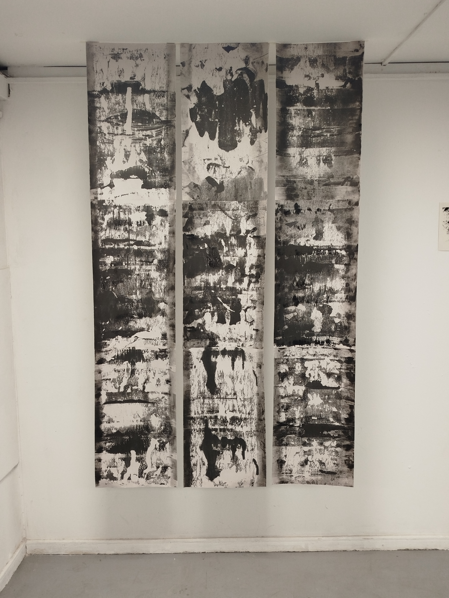
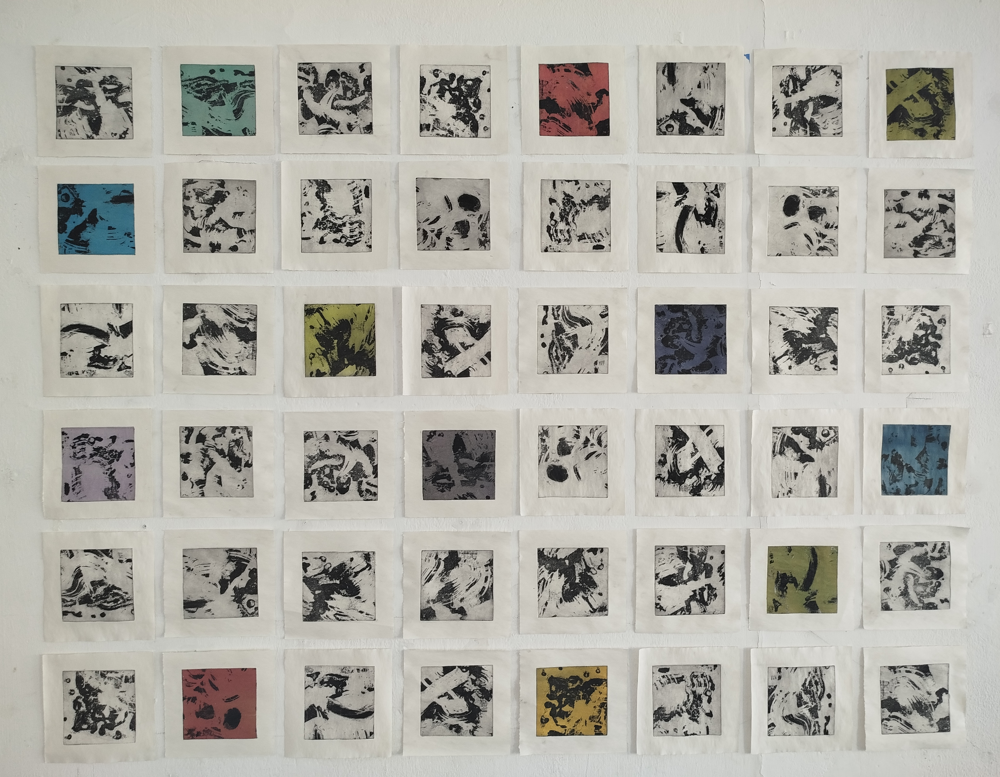
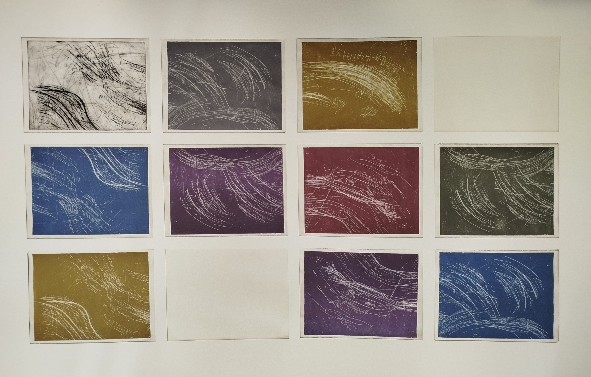
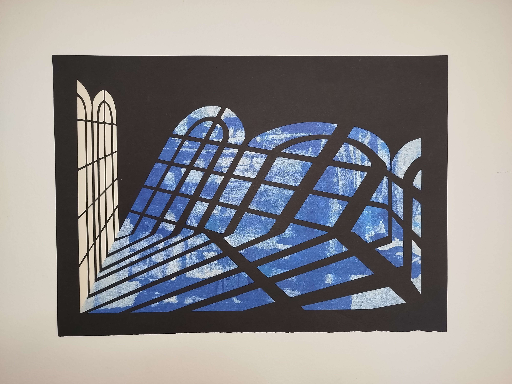
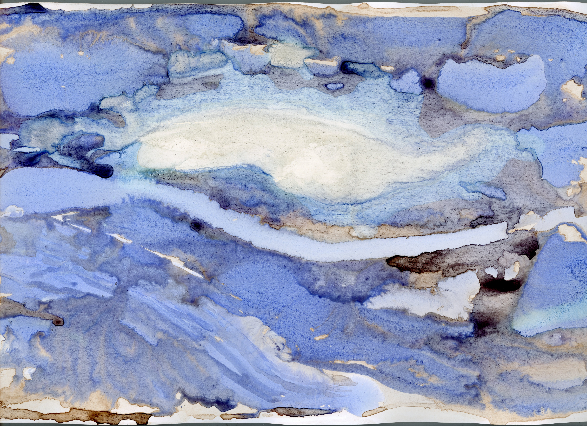

<!DOCTYPE html>
<html lang="es"></html>
<meta charset="UTF-8">
<head>
<title>MIs obras</title>
</head>

</head>

<body>

    <style>
        /* Estilo general del cuerpo */
        
        body {
            font-family: 'Courier New', Courier, monospace, sans-serif;
            background-color: white;
            margin: 0;
            
            color: black;
            font-size: 24px;
            text-align: center;
        }

        /* Contenedor principal */
        .contenedor {
            width: 80%;
            margin: auto;
        }

        /* Sección o bloque */
        .bloque {
            background-color:#f0f0f0;
            margin: 40px 0;
            padding: 20px;
            border-radius: 20px;
        }

        /* Imagen */
        .bloque img {
            width: 100%;
            height: auto;
        }


        h1{
            font-size: 90px;
            text-align: center;
            margin-top: 10px;
            padding-top: 50px;
        }
        
        /* Encabezado */

        h2 {
            margin-top: 10px;
            padding: 10px;
            text-align: left;
        }


        /* Texto */
        p {
            line-height: 1.5;
            text-align: left;
            margin-bottom: 0%;
        }

        a {  
            color: black;
            font-size: 24px;
            text-align: center;
            
        }    
    </style>


    <!-- Contenedor principal -->
    <div class="contenedor">
            <div class="Titulo">
                <h1>Mis obras</h1>
    </div>

        <a href="index.html">Inicio</a><br>
        <br>
        <a href="contacto.html">Contacto</a>


        <!-- BLOQUE 1 -->
        <div class="bloque">
            <h2>Nube con máscara</h2>
            
            <p>Fotomontaje - 2025 </p>
            <p>Esta obra está hecha a partir de un escáner de una máscara veneciana, deformada e intervenida digitalmente, cambiando valores y superponiendo la repetición de la misma imagen.</p>
        </div>

        <!-- BLOQUE 2 -->
        <div class="bloque">
            <h2>Sin Título 1</h2>
            
            
            <p>Monotipo - 3x 36x150cm - 2026</p>
            <p>Monotipos hechos con rodillo sobre papel imprenta, montados a techo.</p>
        </div>

        <!-- BLOQUE 3 -->
        <div class="bloque">
            <h2>Movimiento y color</h2>
            
   
            <p>Calcografía - 48x 12x12cm - 2025</p>
            <p>Obra formada por 4 impresiones de 12 placas distintas de 10x10cm, montadas en diferentes posiciones creando un total de  48 impresiones distintas.</p>
        </div>        
        
        <!-- BLOQUE 4 -->
        <div class="bloque">
            <h2>Sin Título 2</h2>
            
   
            <p>Calcografía - 12x 15x20cm - 2025</p>
            <p>Grabado hecho con  4 placas de aguafuerte impresas a color con rodillo.</p>
        </div>

        <!-- BLOQUE 5 -->
        <div class="bloque">
            <h2>Introspeción 1</h2>
            
   
            <p>Monotipo y papel recortado - 2025</p>
            <p>Primer monotipo de una serie de 6. Busca representar un espacio interno.</p>
        </div>

        <!-- BLOQUE 6 -->
        <div class="bloque">
            <h2>Río azul</h2>
            
   
            <p>Estracto de nogal, cloro y tinta china sobre papel fotográfico - 2024</p>
            <p>Abstracción azul creada a partir de aguadas.</p>
        </div>

    </div>


</body>
</html>